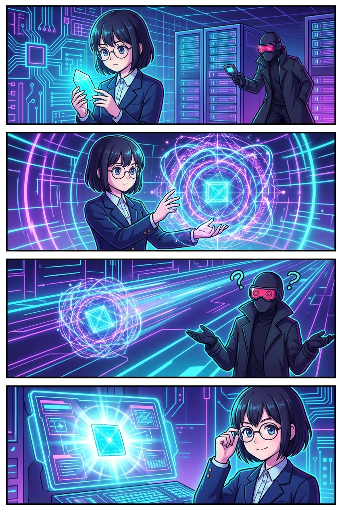
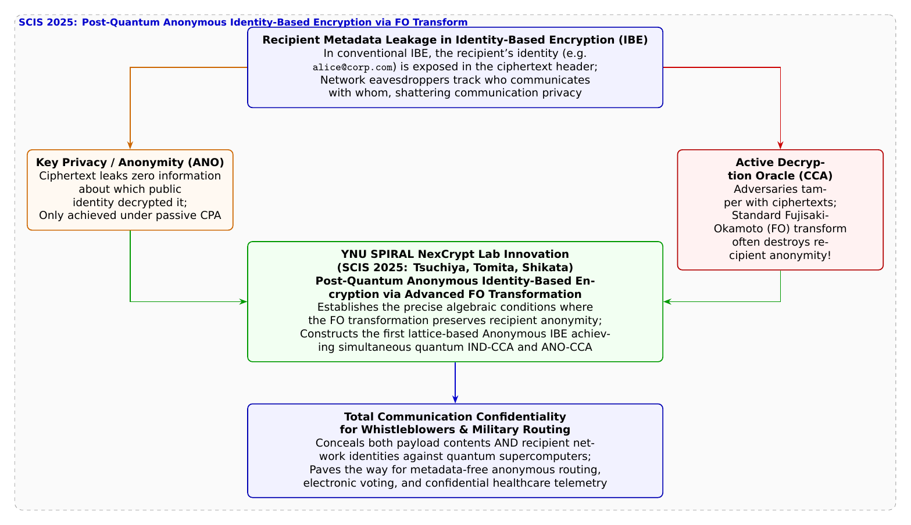

🎨 4コマ漫画挿絵（文字なし）
AI高解像度生成
▲ 【挿絵】青葉台高校 情報科学部＆帝都科学大学サイバーディフェンス・ラボでの実践シーン
💬 4コマ漫画キャラクターセリフ (Story Dialogue Script)
日・英バイリンガル (JA / EN)[蓮]「通信のメタデータ（宛名）漏洩だ……！ 権威主義国家や軍事環境では命に関わる問題だぞ」
[Ren] "Communication metadata leakage... In hostile surveillance or military networks, that's life-threatening!"
[葵]「安全にしようと鍵を二重にかけたら、ドアの表札が光り出しちゃうみたいなもの！？」
[Aoi] "Like adding a heavy padlock that accidentally turns on a neon nameplate on the door!?"
[結衣]「最強の解読耐性（IND-CCA）と、完全な宛名隠蔽（ANO-CCA）が格子理論上で奇跡の両立を果たしました！」
[Yui] "Simultaneous peak security (IND-CCA) and complete recipient anonymity (ANO-CCA) achieved on lattice mathematics!"
[葵]「真実を伝えたい人の声を、静かに優しく守り抜く数学のベールだね！」
[Aoi] "A mathematical veil gently safeguarding the brave voices of those speaking truth!"
📖 小説本文
冬の帳が下りた青葉台高校。静まり返った情報科学部室のモニターには、国家規模のネット検閲や監視通信網のパケットトレース図が映し出されていた。
「……どれほど強力な暗号を使ってメッセージ本文を解読不能にしても、パケットの外側に書かれた『宛名（メタデータ）』が露出すれば、それだけで命が危険に晒される人々がいます」
白石結衣が、紛争地域のジャーナリストや人権保護団体のセキュア通信プロトコルについて説明していた。
「メールアドレスを受信鍵にする『IDベース暗号（IBE）』は、公開鍵証明書を持たない市民でも即座に暗号通信を受け取れる素晴らしい技術です。しかし、通常のIBEでは、暗号文の構造から『この暗号は誰のID（メールアドレス）宛てに送られたものか』が数学的に容易に透けて見えてしまうのです」
橘葵がハッとして息を呑んだ。
「それって……手紙の封筒に『告発窓口の〇〇記者へ』って大きく宛先が書かれているようなものだよね！？ 中身が暗号化されていても、監視している警察や悪者に『あいつが記者に手紙を送ったぞ！』ってバレちゃう！」
「その通りだ、葵ちゃん」
城崎悠真が頷いた。
「そこで考案されたのが、暗号文を見ても誰宛てに暗号化されたのかが第三者には一切判別できない**『匿名IDベース暗号（Anonymous IBE / 鍵プライバシー）』**という技術だ。暗号文を手に入れた攻撃者は、それがアリス宛てなのかボブ宛てなのか、1ビットの手がかりすら得ることができない」
神崎蓮が腕を組みながら問いかけた。
「でも先輩、第45話で学んだように、現実世界のサイバー攻撃者は暗号文を勝手に改ざんしてエラー反応を見る『選択暗号文攻撃（CCA）』を仕掛けてきますよね。CCA安全性を達成するには、平文と乱数をハッシュ関数で結びつける**『藤崎・岡本変換（FO変換）』**を適用するのが世界標準のはずです」
「蓮くん、鋭い指摘だ」悠真が瞳を輝かせた。「だが、そこに現代暗号学が直面していた『深いジレンマ』があったんだ」
結衣がホワイトボードに数式を展開した。
「従来の多くの暗号方式において、CPA安全な暗号にFO変換を安易に適用すると、復号テストの整合性チェックのために暗号文の中に受取人の情報がわずかに漏れ出してしまい、**『安全性（CCA）を高めようとした結果、せっかくの匿名性（ANO）が破壊されてしまう』**という皮肉な現象が知られていたのです」
「ええっ！？ 防御力を上げようとしたら、ステルス迷彩が解除されてしまうの！？」葵が声をあげる。
「さらに、耐量子暗号（PQC）の格子空間において、このジレンマをどう克服するかは未解決の難問だったんだ。そこで、この霧を鮮やかに晴らしたのが、横浜国立大学SPIRALの**土屋有偉氏、冨田斗威氏、四方順司教授（NexCrypt Lab長）**による最新研究なんだよ」
悠真は2025年1月の暗号と情報セキュリティシンポジウム（SCIS 2025）で発表された論文**『耐量子IDベース暗号に対する藤崎・岡本変換とその匿名性について』**を開いた。
「研究チームは、耐量子格子暗号の基盤上で、FO変換の複数のバリエーションを網羅的に代数解析したんだ。そして、どのような代数的・乱数オラクル的条件を満たせば、**『最強のCCA安全性（IND-CCA）』と『完全な宛名匿名性（ANO-CCA）』が同時に壊れることなく両立するか**という厳密な数学的定理を世界に先駆けて証明したんだよ」
蓮が感嘆の息を漏らした。
「格子理論の複雑なノイズ空間の中で、能動的改ざん攻撃を100%弾き返しつつ、受取人の痕跡を完全にゼロにする計算ルートを特定したんですね……！」
部室の端末で、匿名IBEの暗号化パケットが送信された。
スニッファーの画面には、宛先も送信元も完全な漆黒のノイズに溶け込んだパケットが流れていく。しかし、葵のタブレットにそのパケットが届いた瞬間、葵の手元の格子秘密鍵だけが静かに合致し、温かいメッセージが浮かび上がった。
「誰宛てかも分からないのに、私だけに届いた……！ まるで、夜空の星の中から自分だけの光を受け取ったみたい」
葵が呟いた。
「権力による監視を逃れ、真実を語る名もなき人々を守り抜く数学の盾。数理の深淵は、最も温かい人道的な光を放っているのですね」
結衣の言葉に、部室の全員が深く頷いた。窓の外に広がる広大な星空を見つめながら、少年少女たちは、暗号科学が拓く真の自由の価値を誇らしく噛み締めていた。
---
📊 セキュリティ構造図解 (TikZ LuaLaTeX生成)
国家安全基準・工学図解
▲ 【技術構造図】IPAデジタルスキル標準・国際規格に準拠した仕組みのモデル化